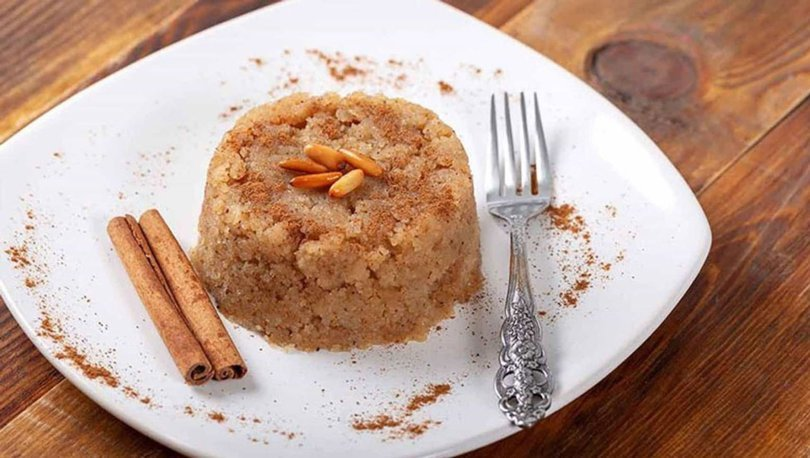

Tatlı severlerin muhakkak evde yaptığı hem kolay hem de lezzetli irmik helvası
tarifi zaman zaman yoğun ilgi görüyor. İster yemek sonrasına isterseniz 5 çayına
ikram edebileceğiniz irmik helvasının en güzel tarifi şöyle:
Kaç Kişilik: 4 Kişilik
Hazırlanma Süresi: 20 Dakika
Pişirme Süresi: 10 Dakika

İrmik Helvası Malzemeleri
- 2 su bardağı irmik
- 1/2 çay bardağı sıvı yağ
- 1,5 su bardağı toz şeker
- 4 su bardağı su
- 1 paket vanilya
Nasıl Yapılır?
- Derince bir kabın içinde suyu ve şekeri, şeker eriyene dek karıştırın.
İçine vanilyayı da ekleyin, karıştırın ve bir kenara alın.
- Yapışmaz tabanlı derin bir tencere ya da tavaya sıvı yağı alın ve üstüne
2 su bardağı irmiği ekleyin.
- Ocağın altını açın ve irmikler esmerleşene dek sürekli bir şekilde, yaklaşık
15 dakika boyunca kavurun.
- İrmikler esmerleştiğinde, hazırladığınız şerbeti üstüne dökün ve karıştıramaya
ara vermeden, irmik tüm şerbeti çekene dek 10 dakika daha karıştırarak pişirin.
- Tercihe göre dondurmalı veya dondurmasız servis edebilirsiniz.